Plane of Justice
The Six Trials and The Seventh Hammer
There are 6 total Trials. You must only complete 1 for Planar Progression flagging. Planar Flagging information can be found HERE. If you do all 6 you can Access the raid boss The Seventh Hammer.
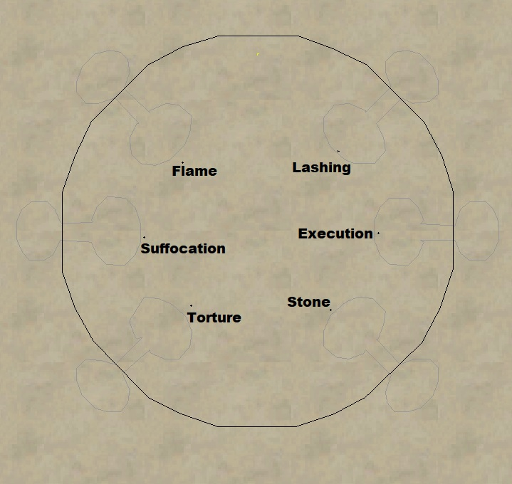
The 6 Trials are:
- Execution
- Flame
- Lashing
- Stone
- Suffocation
- Torture
Trial of Execution
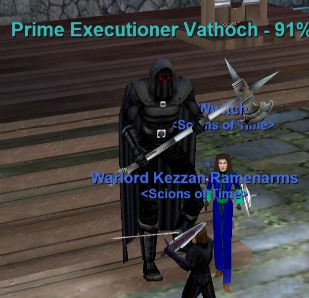
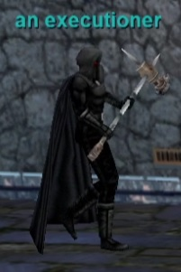
Generally considered the easiest trial by most. All you really need for this one is some DPS. 4x Waves of 4 mobs spawn. Focus them and kill 1 mob at a time. Kill them as fast as possible. You’ll notice an executioner spawns in addition to the 4 mobs during each wave. an executioner walks towards the guillotines during each wave. Killing a mob will reset his position to the beginning. If he reaches the guillotines you fail the event.
After all 4 Waves are dead Prime Executioner Vathoch spawns. Kill him and loot Mark of Execution.
- Hits 600+
- Slowable
- Estimated 40K HP
- Casts Armor Break (PBAE, -270 AC Debuff, Unresistable)
Trial of Flame
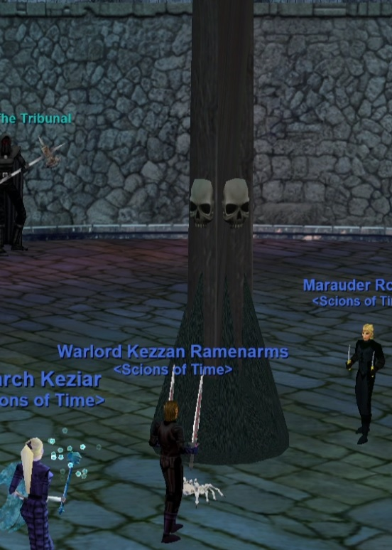
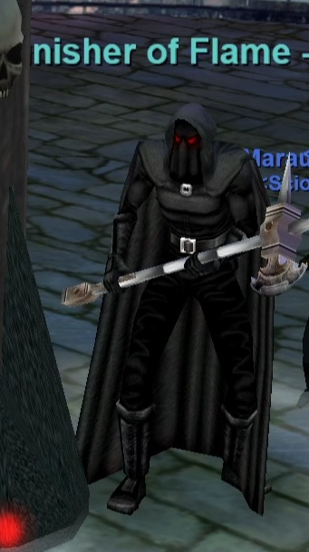
After all 4 Waves are dead Punisher of Flame spawns. Kill him and loot Mark of Flame.
- Hits 600+
- AE Rampage
- Slowable
- Estimated 35K HP
- Casts Rain of Molten Lava (PBAE, 300 DD, -100 Fire Based, 12 sec recast)
Trial of Lashing
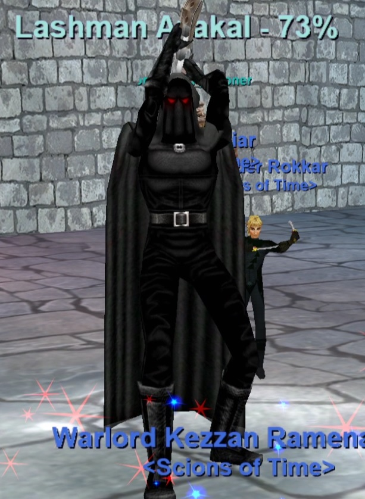
This trial can be a little confusing. You’ll have 4 total waves followed by a boss. Each of the first 4 waves will consist of 4 targetable mobs and 1 untargetable mob (a scourge of honor). The general strategy is to kill the 4 targetable mobs and mez/slow as necessary. Once the 4 mobs in each wave die a flickering spirit will spawn in each of the 3 hallways. Kill them, they are trivial. Once all a flickering spirit are dead a scourge of honor will despawn and you can wait for the next wave. This trial is a little longer than most but can still be done in around 10 minutes.
After all 4 Waves are dead Lashman Akazal spawns. Kill him and loot Mark of Lashing.
- Hits 600+
- AE Rampage
- Slowable
- Estimated 35K HP
- Casts Thunderclap (PBAE, Small DD/Stun, Magic Based, 10 sec recast)
Trial of Stone
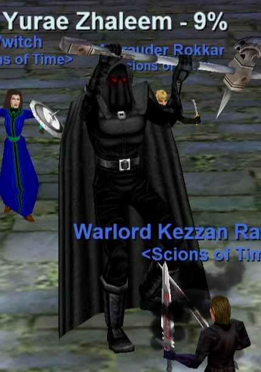
This trial is straight forward. Mobs will spawn out of the doors. Kill them as the spawn. You’ll see 4 waves of 4 mobs. Everything is slowable. Kill them as they come. You can mez the spectre mobs. Some non-targetable NPCs will also shoot at your group from up above while killing the waves. Some ground floor mobs also will shoot at the halfling prisoners. They will despawn when the 4 targetable mobs die and respawn each wave. Focus them down the 4 targetable mob, kill quickly, and you’ll be successful.
After all 4 Waves are dead Yurae Zhaleem spawns. Kill him and loot Mark of Stone.
- Hits 600+
- AE Rampage
- Slowable
- Estimated 40K HP
- Harmtouches upon aggro
- Casts Gravel Rain (PBAE, Snare/250 DD, -300 Magic Based, 10 sec recast, curse counter)
- Casts Cascading Darkness (Single Target, Snare, Magic Based)
Trial of Suffocation (aka Hanging)
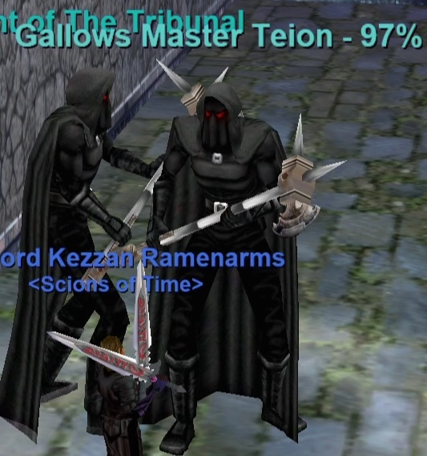
This is also known as Trial of Hanging. This trial is pretty straight forward. Everything is slowable. You’ll get waves of mobs that spawn. The important thing here is to kill the spirit of suffocation mobs FIRST. Not doing so can result in trial failure. As long as you kill in order and quickly you’ll succeed. 3 mobs typically spawn at a time.
After a few waves Gallows Master Teion spawns instead of wraith of agony. Kill it and loot Mark of Suffocation.
- Hits 600+
- AE Rampage
- Slowable
- Estimated 30-40K HP
- Harmtouches upon aggro
- Casts Wing Squall (Targeted AE, 350 DD/2 sec stun, -150 Magic Resist, 10 second recast)
- Casts miscellaneous Enchanter spells.
Trial of Torture
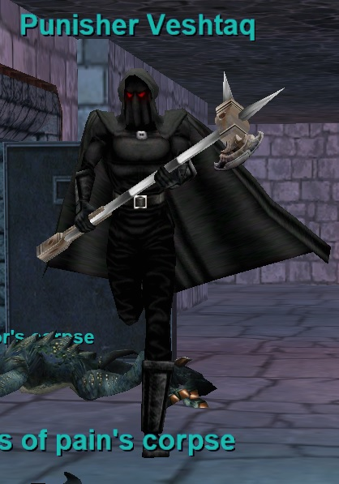
You’ll get 4 waves of 4 mobs that spawn in the Yellow Circles (2 spawn per side). After each wave dies wraith of agony will spawn in either the middle room or in the zone-in cubby (Red Circles). Kill wraith of agony quickly — if you’re too slow you’ll fail. There’s a few minutes of time between each wave. Everything is slowable.
On the 4th wave Punisher Veshtaq spawns instead of wraith of agony. Kill it and loot Mark of Torture.
- Hits 600+
- AE Rampage
- Slowable
- Estimated 40K HP
- Harmtouches upon aggro
- Casts Pain and Suffering (PBAE, 100 DD, 10 sec recast, unresistable)
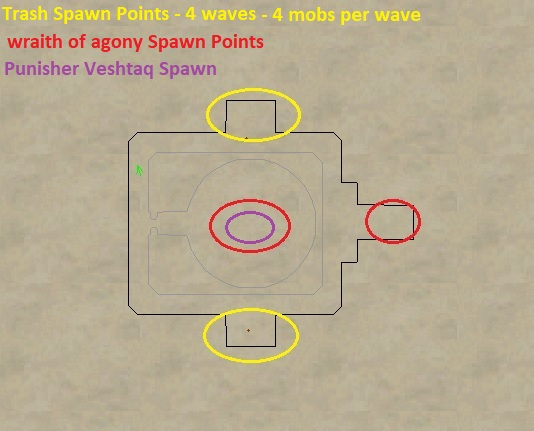
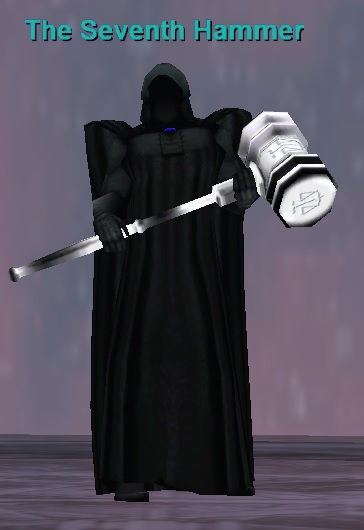
Do all 6 Plane of Justice Trials. Loot the Mark from each Trial. Once you have all 6 Marks say "knowledge" to one of The Tribunal in the Trial Area to receive The Mark of Justice. You can use this as a click up to The Seventh Hammer. Click a Blue portal behind one of The Tribunal in the trial area to zone up with the The Mark of Justice on your cursor (may have to press U, it’s kind of buggy). You can destroy your old Marks if you wish at this point. Keep in mind that The Mark of Justice doesn’t go on the key ring.
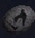
The Mark of Justice can be used to port your entire group — so only one person per group needs it to port up.
This is an Endurance fight but can be done with smaller raid groups.
- Hits 305–1240 (PQDI; eqprogression estimated 1400+)
- AE Rampages
- High HP
- Slowable
- Casts Justice (Single Target, 850 DD, Unresistable)
- Casts Tremor of Justice (PBAE, 800 DD, -300 Magic Resist)
- Casts Verdict of Eternity (PBAE, -100 Mana/-200 Life DoT, Curse Counter 9, 40 second recast)
Quarm Script
Sourced from the Quarm server Lua script (pojustice/The_Severh_Hammer.lua → The_Seventh_Hammer.lua, SecretsOTheP/quests):
- The challenge begins via dialogue with the hammer: saying “Hail” gets a greeting, and saying “Ready to face” starts the fight (“Very well mortals, Now begins the test of your very souls!”), adding you to its hate list.
- If you attack the hammer without using the dialogue, it shouts “Prepare for judgement mortals!”
- The visible Tribunal (NPC 201427) plays animations while the invisible Tribunal (NPC 201423) casts the spells.
- Verdict of Eternity (spell 1108): first cast 181–190 seconds after combat begins, then every 187 seconds (~3 minutes).
- Tremor of Judgment (spell 1107): first cast 86–95 seconds after combat begins, then every 187 seconds (~3 minutes).
- When you leave combat, a 10-minute timer starts; after 10 minutes out of combat, both casting timers stop. Re-entering combat cancels the out-of-combat timer and restarts both casting timers.
| Level | 73 |
|---|---|
| HP | 1,080,000 |
| Hits | 305 - 1240 |
| Resistances | MR 265 / CR 190 / FR 190 / DR 175 / PR 175 |
| Special Abilities | Summon, Enrage, Area Rampage, Dual Wield, Do Not Equip, Magical Attack, Unslowable, Unmezzable, Uncharmable, Unstunable, Unsnarable, Unfearable, Immune to fleeing, Immune to melee except magical, Use Warrior Skills, NO LOITERING |
| Procs | Justice |
Cross-referenced from pqdi.cc (Project Quarm Database Interface)
Grummus
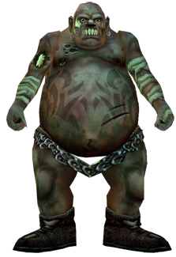
Fight Info
Grummus is a raid boss located in the back of the castle. There are two mini-bosses before him. He considered an easy fight and is a pushover for Level 60+ mid sized raids. Group heals and disease cures are helpful to counteract his DoT’s.
- Hits 221–1179 (PQDI; eqprogression estimated 1500+)
- Slowable
- Rampages
- Approx. 500,000 HP with MoTM
- Casts Decay of the Plaguebringer (Single Target, 300 HP/Tick DoT + 60% Slow, Disease Based)
- Casts Stench of Decay (PBAE, 200 HP DoT, Disease Based)
- Casts Plasma Decay (PBAE, DoT with damage that increases more each tick, Disease Based)
If PoP Flagging: Once Grummus is dead, hail the Planar Projection for a character flag. Click on the sewer cap to reveal the the zone in to Crypt of Decay. Drop down.
Loot
- Bone Spiked Crusher
- Chunk of Decaying Cloth
- Diseased Ratskin Mask
- Fetid Flesh Wristband
- Malarian Leg Ear Stud
- Pus Covered Beetle Carapace
- Ring of the Pox Bearer
- Runed Lance of Gryme
- Ethereal Parchment
- Spectral Parchment
Quarm Script
Sourced from the Quarm server Lua script (podisease/#Grummus.lua, SecretsOTheP/quests):
- No scripted combat mechanics (no HP events, timers, or summons) — the fight is a standard melee encounter.
- On death he spawns a Planar Projection (NPC 205156) loot container at his location and hands it to the killer — this is the flag pickup point for Plane of Disease progression.
| Level | 70 |
|---|---|
| HP | 500,000 |
| Hits | 221 - 1179 |
| Resistances | MR 85 / CR 65 / FR 65 / DR 105 / PR 55 |
| Special Abilities | Summon, Enrage, Rampage, Dual Wield, Do Not Equip, Magical Attack, Unslowable, Unmezzable, Uncharmable, Unstunable, Unsnarable, Unfearable, Immune to fleeing, Immune to melee except magical, Proximity Aggro |
| Can Cast | Stench of Decay, Plasma Decay |
| Procs | Decay of the Plaguebringer |
Cross-referenced from pqdi.cc (Project Quarm Database Interface)
Terris-Thule
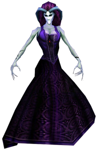
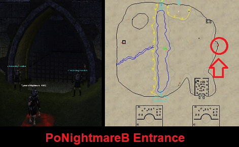
Loot
- Fearsome Midnight Cloak
- Indigo Snake Bracelet
- Knucklebone Beaded Veil
- Sable Lined Mantle
- Ethereal Parchment
- Spectral Parchment
Fight Info
Upon zoning in, you will have to clear a bunch of trivial trash along the path to get to Terris-Thule’s chambers.
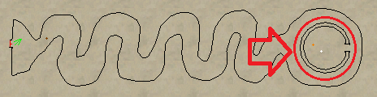
The Terris-Thule fight is pretty straight forward. She doesn’t hit very hard and doesn’t have a lot of HP. She has 3 main mechanics worth noting.
- 1,100,000 HP (PQDI; eqprogression estimated 500K MoTM)
- Hits 661–1801
- Slowable
75% HP – A bunch of small adds spawn. Some are mezzable, some aren’t. Kill the adds.
50% HP – Mass AE dispel on the entire raid. If you have high DPS you can ignore this, but if you would like to avoid it to be safe, then have everyone except the main tank and a couple of healers run out of the dome and hide behind the wall before she hits 50%, wait for the dispel to go off at 50%, then everyone can run back in.
Roughly 35% HP (often delayed)– Four Gargoyles spawn, it is best to off-tank or kite these and use burns on Terris-Thule at this point.
Kill the Gargoyles off after she is dead and Hail the Planar Projection for your flag!
Quarm Script
Sourced from the Quarm server Lua script (nightmareb/Terris_Thule.lua, SecretsOTheP/quests):
- At 95% HP she speaks a nightmare message to nearby players (“The sound of a thousand terrified screams…”).
- At 79% and 69% HP she spawns one Dream Defiler per player who has dealt damage to her — each defiler is a random small (NPC 221045) or large (NPC 221044) variant, and the larger defiler is immune to several effects.
- At 50% HP she speaks a second nightmare message and casts Direption of Dreams (spell 3150), a slowing debuff, on herself.
- At 40% HP she shouts a taunt (“You will not escape my realm so easily!”) and 4 gargoyles (NPC 221043) emerge from the statues (the statues then depop).
- Bounds check: if she moves outside the arena she teleports back to the center of the chamber, casts Balance of the Nameless (spell 3230, which clears DoTs/magic), and announces she is “cleansed of your magic.”
- On death she spawns a Planar Projection (NPC 221042) loot container for the killer.
| Level | 70 |
|---|---|
| HP | 450,000 |
| Hits | 211 - 977 |
| Resistances | MR 250 / CR 250 / FR 250 / DR 230 / PR 230 |
| Special Abilities | Summon, Enrage, Flurry, Dual Wield, Do Not Equip, Magical Attack, Unmezzable, Uncharmable, Unstunable, Unsnarable, Unfearable, Immune to fleeing, Immune to melee except magical, Immune to lull effects, Always Calls for Help, NO LOITERING |
| Procs | Touch of Night |
Cross-referenced from pqdi.cc (Project Quarm Database Interface)
Xanamech Nezmirthafen
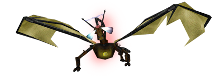
Loot
- Cord Hilted Spike Driver
- Innovator’s Ring
- Pulsing Phase Emitter
- The Weapon’s Driveshaft
- Woven Shim Choker
- Ethereal Parchment
Fight Info
You will need to obtain 3 items from around the zone. They are random zone-wide drops and are somewhat uncommon so it might take a bit of time if you are unlucky.
- Intact Power Cell – Random zone-wide drop.
- Copper Node – Random zone-wide drop.
- Bundle of Super Conductive Wires – Random zone-wide drop.
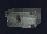
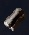
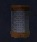
Once you have all 3, give them to Nitram Anizok, who initially roams in the red area of the map. Once you give him the items he will begin pathing torwards Xanamech Nezmirthafen. Clear trash along the way (or you can pre-clear before turning in the items). Once he arrives, Xanamech Nezmirthafen will become targetable.
Note: If Xanamech Nezmirthafen is up, then it will be laying on the ground in its untargable state in his spawn room (see map).
Kill Xanamech and hail Nitram Anizok to get your Factory Key Flag.
- 220,000 HP (PQDI; eqprogression estimated 250K MoTM)
- Hits 225–1390
- Slowable
- Casts Oil Spray (PBAE, Snare, Unresistable)
- Casts Electrical Short (Targeted AE, 300 DD + Stun, -200 Magic Based)
- Casts Steam Blast (PBAE, 880 DD, -300 Fire Based)
You will not get an actual item key, but you will receive an achievement (Factory Code) that allows you to open the Factory Door. It is not part of the Planar Progression requirement chain. Only one person in the raid technically needs this to open the door for everyone else.
Note: Do not let the dragon kill the gnome, or you won’t be able to hail him after the fight. You can mez and mem blur the gnome before engaging if needed. You can heal and buff him as well. I recommended keeping a Heal over Time on him during the fight.
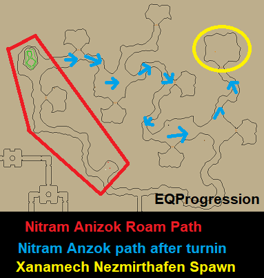
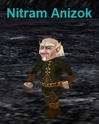
Quarm Script
Sourced from the Quarm server Lua script (poinnovation/#Xanamech_Nezmirthafen.lua, SecretsOTheP/quests):
- Xanamech is a dormant construct with a 30-minute despawn timer that is paused during combat.
- When triggered (signal 1), he awakens: about 3.5 seconds later he becomes attackable and aggro-capable (Will Not Aggro, Immune to Aggro, and No Harm from Players are all switched off) and becomes a construct body type.
- On death he signals Nitram_Anizok (NPC 206033) to continue the quest.
| Level | 66 |
|---|---|
| HP | 220,000 |
| Hits | 225 - 1390 |
| Resistances | MR 250 / CR 150 / FR 185 / DR 1000 / PR 230 |
| Special Abilities | Summon, Enrage, Dual Wield, Do Not Equip, Unmezzable, Uncharmable, Unstunable, Unfearable, Immune to fleeing, Will not Aggro, Immune to Aggro, No Harm from Players |
| Can Cast | Steam Blast, Electrical Short, Oil Spray |
Cross-referenced from pqdi.cc (Project Quarm Database Interface)
Manaetic Behemoth
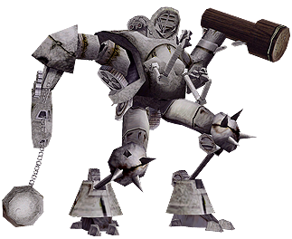
Loot
- Coil of Twisted Platinum Wire
- Glowing Steel Shim
- Innovator’s Hammer
- Protective Dust Drape
- Self Contained Force Barrier
- Ethereal Parchment
- Spectral Parchment
Fight Info
Inside the first room you will see a gnome on a grate, Giwin Mirakon. Say the phrase "I will test the machine" to him for your pre-flag.
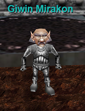
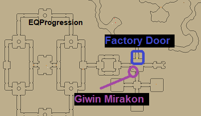
For this event, you will want to split your raid force into two groups. Spiders will constantly run into Behemoths room from two sides and explode once inside. Their explosion sets off a 4,000 damage AE inside of his room. In order to avoid this, the two groups will want to setup outside each door of Behemoths room and kill all spiders trying to get inside.
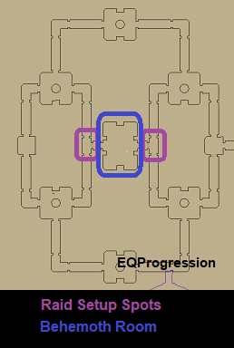
After about 5 to 10 minutes of preventing spiders from entering, Behemoth will become targetable and you’ll be able to kill him. At this point you will want to have 1 or 2 groups (or whatever is necessary) stay outside and continue killing spiders, while the rest of the raid charges in for the kill. Spiders must be prevented from entering the room at all times otherwise they will trigger the AE and wipe the raid. Once Behemoth is dead, everyone needs to run out of the room ASAP and finish off the aggroed spiders.
- 150,000 HP (PQDI; eqprogression estimated ~175K MoTM)
- Slowable (Disease-based may be easiest to land)
- Hits 205–843
- Casts Gyrosonic Disruption (PBAE, Knockback + 600 DD, -300 Magic Based)
- Casts Wave of White Noise (PBAE, Silence, Unresistable)
Note : Even after Behemoth is dead, spiders will still run inside. In short, never go into his room unless spiders are being prevented from entering.
Giwin Mirakon will spawn again at East door of Behemoths room, make sure to hail him for your flag. This will grant you access to Plane of Tactics!
Quarm Script
Sourced from the Quarm server Lua script (poinnovation/encounters/Behemoth.lua, SecretsOTheP/quests):
- A controller (Weapon_Event_Master, NPC 206197) spawns a wave of Clockwork Devices (NPC 206001) every 48 seconds, each wave appearing at one of six clock positions (12:00, 2:30, 4:30, 6:00, 7:30, 10:30).
- Clockwork Devices that reach the core explode (spell 2321); a device that is being attacked is held as an “exploder” and explodes when it drops out of combat.
- The Behemoth (NPC 206046) is dormant (Will Not Aggro / No Harm from Players) until 10 devices have been killed.
- After 10 kills the Behemoth awakens: it becomes attackable and gains one of four random special abilities — Gas Leak (1080), Deathfog IV (1081), Biomelt IX (1082), or Liquid Hydrokill (1083).
- Bounds check: if the Behemoth leaves the arena it teleports back, wipes its hate list, fully heals, and casts Balance of the Nameless (3230).
- On death: the waves stop, all remaining Clockwork Devices despawn, and Giwin Mirakon (NPC 206203) spawns and signals the killer (the flag).
| Level | 70 |
|---|---|
| HP | 150,000 |
| Hits | 205 - 843 |
| Resistances | MR 250 / CR 200 / FR 180 / DR 175 / PR 335 |
| Special Abilities | Summon, Enrage, Dual Wield, Do Not Equip, Magical Attack, Unslowable, Unmezzable, Uncharmable, Unstunable, Immune to fleeing, Will not Aggro, No Harm from Players, Corpse Camper |
| Can Cast | Mana Beam, Gyrosonic Disruption, Wave of White Noise |
Cross-referenced from pqdi.cc (Project Quarm Database Interface)
Watch
Sources: eqprogression.com guide pages — Plane of Justice Trials and The Seventh Hammer, Grummus (Plane of Disease), Terris-Thule (Plane of Nightmare), Manaetic Behemoth (Plane of Innovation), and Xanamech Nezmirthafen (Plane of Innovation); raspersrealm.com (Plane of Time only); pqdi.cc for boss statistics. Videos embedded from YouTube.